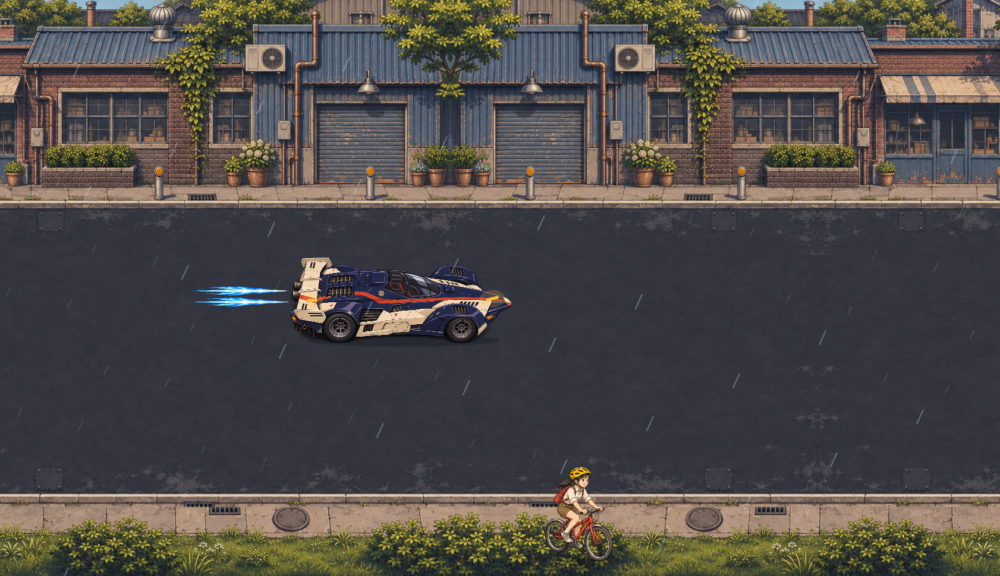
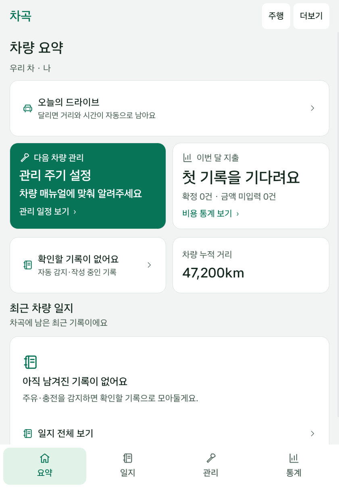
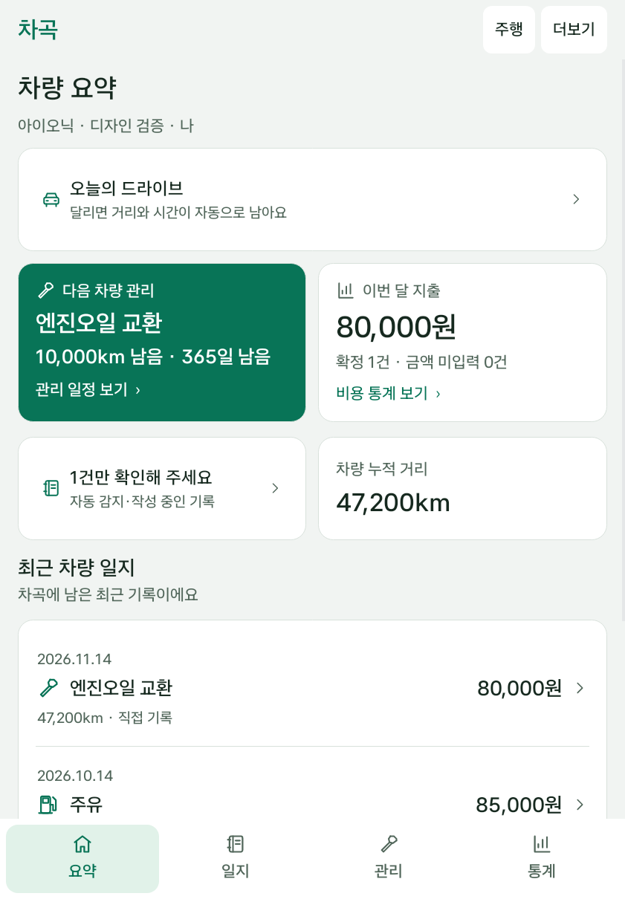
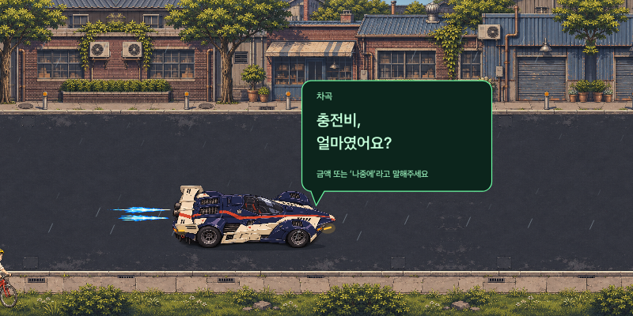
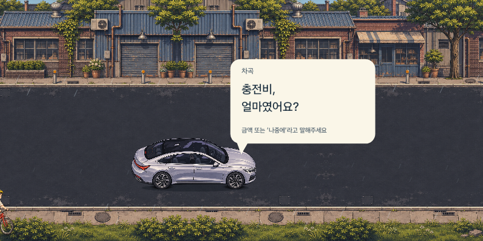
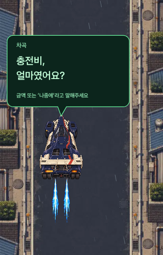
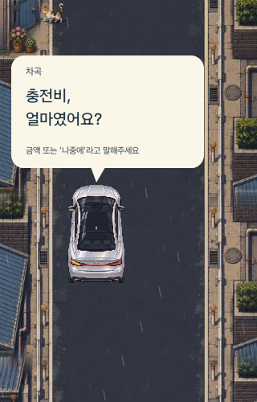
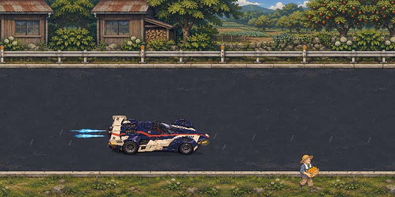
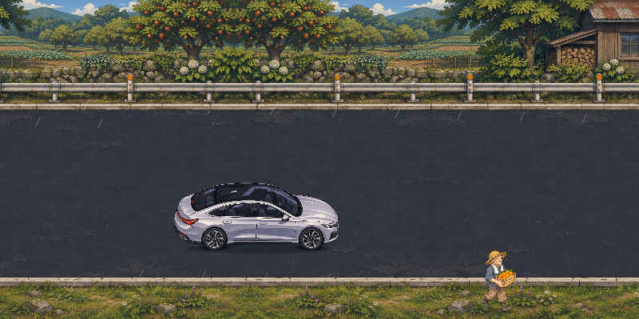

CHAGOK / ANDROID / v11
가로로 넓어지면, 옆으로 달려요.
실제 Android Canvas 렌더링 캡처입니다. 가로 화면에서는 오른쪽을 향한 차량과 가로 도로를 사용합니다. 좌회전은 위쪽의 먼 차선, 우회전은 아래쪽의 가까운 차선으로 부드럽게 이동합니다. 세로 창은 기존 주행 시점을 유지합니다.

좌회전 · 위쪽 차선. 가속 부스터와 비 효과가 켜진 시험 장면입니다.
실제 PLEOS 창에서 움직이는 모습
시험 전용 앱의 정차 미리보기입니다. 두 차량의 차선 이동·깜빡이·부스터·비·말풍선을 연속으로 확인합니다. 일반 앱의 차량 일지에는 시험 기록을 넣지 않았습니다.
같은 높이로 정리한 차량 요약

확인할 기록이 없는 상태
확인할 기록이 있는 상태진행 방향 앞쪽, 짧은 말풍선 꼬리

레이서 · 초록 네온 말풍선
현대 세단 · 밝은 말풍선
세로 · 차량 앞쪽에 붙인 짧은 꼬리
세로 · 현대 세단에도 동일 적용가끔 만나는 시골

시골 배경 · 레이서
시골 배경 · 현대 세단검증 결과 · 구현 범위와 이미지 자산 · 차량·도로 생성 프롬프트 · 만남 이미지 생성 프롬프트